CS180 Final Project: Lightfield Photography and Gradient Domain Fusion
Author: Ziqian Luo
Table of Contents
Lightfield Photography Overview
Lightfield photography captures a scene from multiple viewpoints, creating a rich dataset that allows for computational adjustments after the photos are taken. This project explores two key techniques enabled by lightfield data: depth refocusing and aperture adjustment, using datasets from the Stanford Light Field Archive.
Part 1: Depth Refocusing
Depth refocusing allows me to simulate changing the focal plane of a photograph after it's been taken. By working with a grid of images captured from slightly different positions, I can computationally mimic the effect of focusing on objects at various distances, bringing different parts of the scene into focus.
Implementation Details
My approach leverages the multiple viewpoints available in the lightfield data. I shift each image in the grid based on its position relative to a central viewpoint and the desired depth. The amount of shift is determined by a depth parameter, c.
Shift Calculation:
shift_i = c * (center_i - i)
shift_j = c * (j - center_j)
Here, (i, j) is the image's position in the grid, (center_i, center_j) is the grid's center, and shift_i, shift_j are the vertical and horizontal shifts. A larger c focuses on closer objects, while a smaller or negative c focuses further away.
Process:
- Load the image grid.
- For each depth
c:- Calculate the shift for each image using the above equations.
- Apply the shift using nearest-neighbor interpolation (
scipy.ndimage.shift).
- Average all shifted images for a given depth to get the refocused image.
- Repeat for different depths.
- Assemble the refocused images into a GIF to visualize the effect.
Chess Dataset

This GIF demonstrates depth refocusing on a chessboard. Depth ranges from 0 to 3 with step size 0.2.
Bunny Dataset
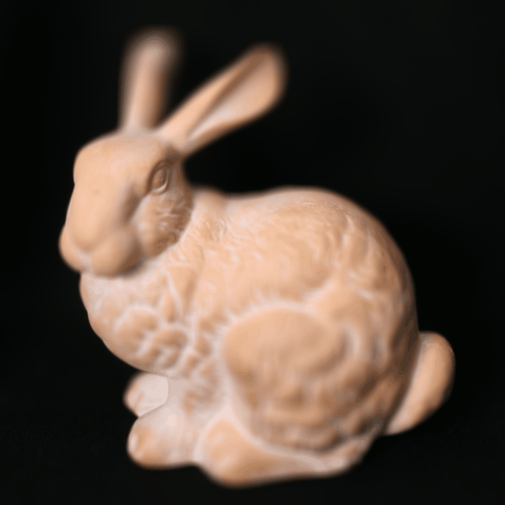This GIF demonstrates depth refocusing on a bunny scene. Depth ranges from 0 to 2 with step size 0.2.
Part 2: Aperture Adjustment
Aperture adjustment simulates changing the lens aperture of a camera. A wider aperture (smaller f-number) results in a shallower depth of field (more background blur), while a narrower aperture (larger f-number) increases the depth of field.
Implementation Details
I build on the depth refocusing concept, but instead of using all images for each depth, I select a subset based on their distance from the grid's center. This simulates different aperture sizes.
Image Selection:
(i - center_i)^2 + (j - center_j)^2 <= aperture_radius^2
I only use images within a given aperture_radius from the center (center_i, center_j). Smaller radii mimic narrower apertures, while larger radii mimic wider apertures.
Shift Calculation:
The shift calculation is the same as in depth refocusing, using the same depth parameter c and equations.
Process:
- For each
aperture_radiusand depthc:- Select images within the
aperture_radius. - Calculate the shift for each selected image.
- Apply the shift.
- Select images within the
- Average the shifted images to create the aperture-adjusted image.
- Repeat for various aperture radii and depths.
- Assemble the images into a GIF to visualize the effect.
Chess Dataset
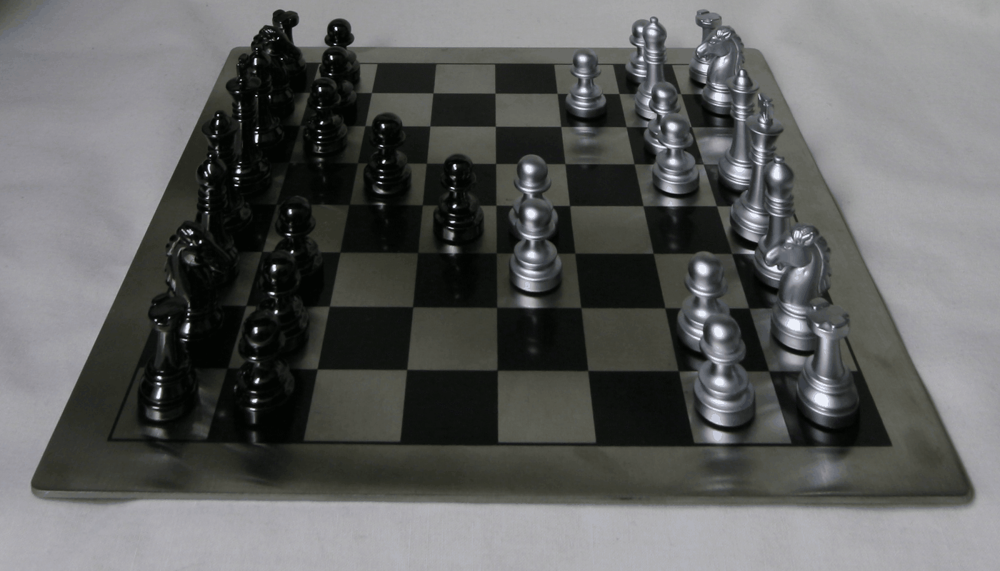This GIF demonstrates aperture adjustment on a chessboard. c=1.5 and aperture ranges from 0 to 9.
Bunny Dataset
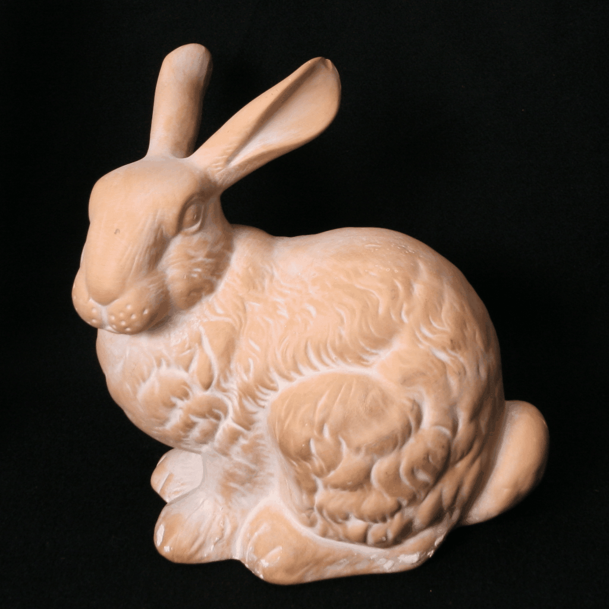This GIF demonstrates aperture adjustment on a bunny scene. c=0.5 and aperture ranges from 0 to 9.
Summary of Lightfield
In this project, I explored the capabilities of lightfield photography through depth refocusing and aperture adjustment. By leveraging multiple viewpoints, I was able to simulate changing the focal plane and lens aperture after capturing the images. I guess these techniques are now used in the portait mode in smartphone cameras.
Gradient Domain Fusion Overview
Gradient-domain image processing techniques work by manipulating the differences between neighboring pixel intensities (gradients) rather than the pixel values themselves. This approach is effective because our visual system is more sensitive to changes in intensity than to absolute intensity. I focused on Poisson blending, a method for seamlessly merging a source image region into a target image by matching gradients.
Part 1: Toy Problem
The toy problem introduced me to the concept of gradient-domain image reconstruction. Given an image's x and y gradients and a single "anchor" pixel value, I learned how to reconstruct the original image. This demonstrated how images can be represented and manipulated using gradients.
Implementation Concepts
I formulated the reconstruction as a least squares problem. I used \( s(x,y) \) to denote the intensity of the source image at pixel (x, y), and \( v(x,y) \) for the values of the image I was solving for. For each pixel, I had two primary objectives:
- Minimize \( ( v(x+1,y)-v(x,y) - (s(x+1,y)-s(x,y)) )^2 \): This ensured that the x-gradients of \(v\) closely matched the x-gradients of \(s\).
- Minimize \( ( v(x,y+1)-v(x,y) - (s(x,y+1)-s(x,y)) )^2 \): This did the same for the y-gradients.
Because these objectives alone could be satisfied by adding any constant to \(v\), I added a third objective:
- Minimize \((v(0,0)-s(0,0))^2 \): This anchored the top-left corner of \(v\) to the same color as \(s\) (using 0-based indexing).
To solve this, I constructed a sparse matrix \( A \) and a vector \( b \). Each row in \( A \) represented one of the x-gradient or y-gradient constraints.
Encoding the Equations:
- X-gradient: For each pixel (x, y), I placed -1 in the column of \( A \) corresponding to \( v(x, y) \) and 1 in the column for \( v(x+1, y) \). The corresponding entry in \( b \) became \( s(x+1, y) - s(x, y) \).
- Y-gradient: Similarly, for each pixel (x, y), I placed -1 in the column of \( A \) for \( v(x, y) \) and 1 in the column for \( v(x, y+1) \). The corresponding entry in \( b \) became \( s(x, y+1) - s(x, y) \).
- Anchor Constraint: I added a row to \( A \) with 1 in the column for \( v(0, 0) \), and set the corresponding entry in \( b \) to \( s(0, 0) \).
Finally, I solved the sparse system \( Av = b \) to obtain the reconstructed image \( v \).
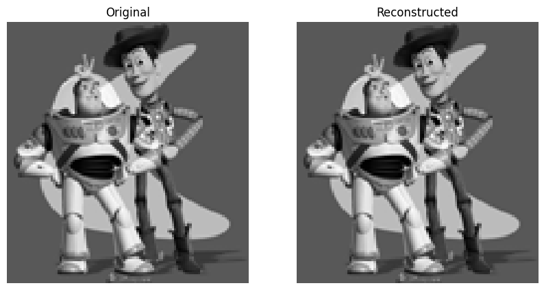The max error is 0.001.
Part 2: Poisson Blending
Poisson blending allowed me to seamlessly merge a source region \( S \) into a target image \( T \) by matching gradients at the boundary and within the source region.
Objective Function: \[ \text{minimize: } \sum_{i \in S, j \in N_i \cap S} ((v_i - v_j) - (s_i - s_j))^2 + \sum_{i \in S, j \in N_i \cap \neg S} ((v_i - t_j) - (s_i - s_j))^2 \]
where \( N_i \) is the set of 4-neighbors of pixel \( i \).
Implementation Concepts
I constructed a sparse matrix \( A \) and vector \( b \). Each row corresponded to a pixel \( i \) in \( S \).
-
If neighbor \( j \) was also in \( S \):
- Set \( A_{i,i} = 1 \) and \( A_{i,j} = -1 \).
- Add \( (s_i - s_j) \) to \( b_i \).
-
If neighbor \( j \) was outside \( S \) (in \( T \)):
- Set \( A_{i,i} = 1 \).
- Add \( (s_i - s_j) + t_j \) to \( b_i \).
I solved the sparse system \( Av = b \) to find the optimal pixel values \( v \) within \( S \).
Example
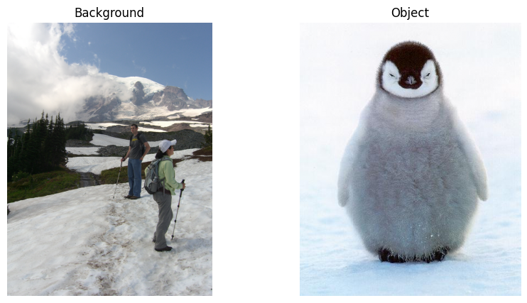 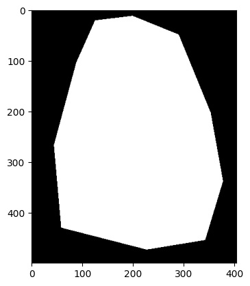 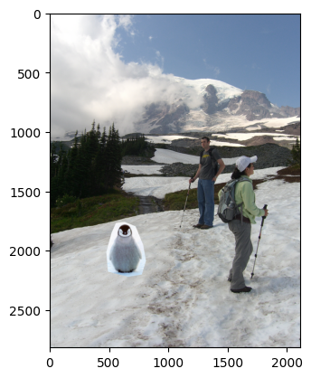 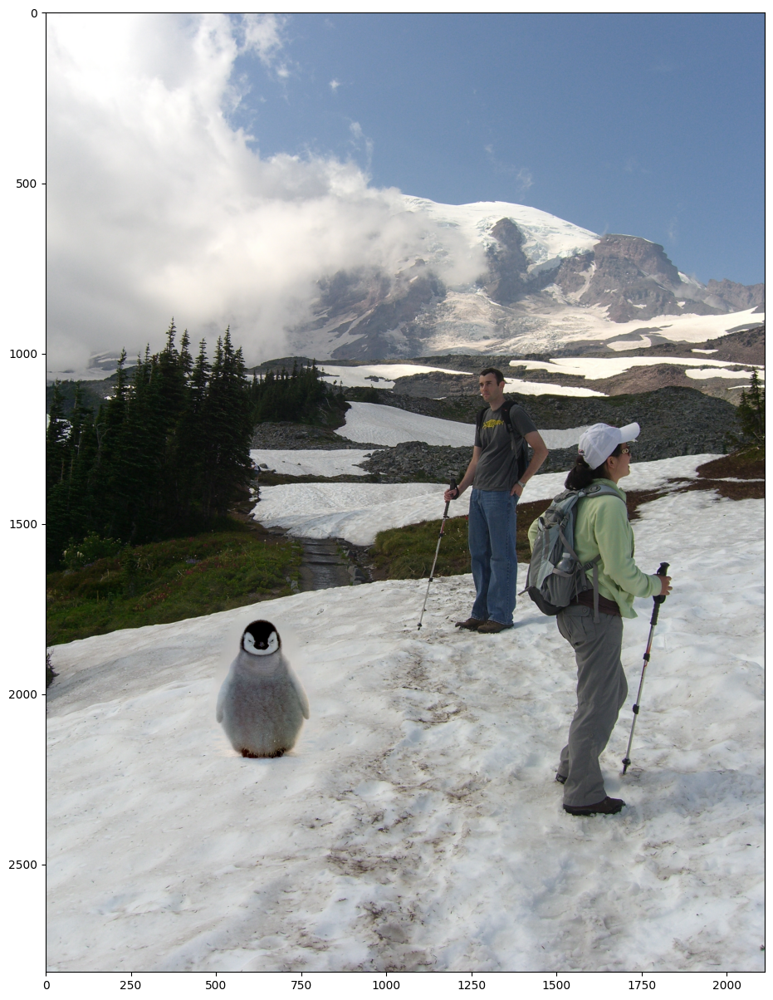 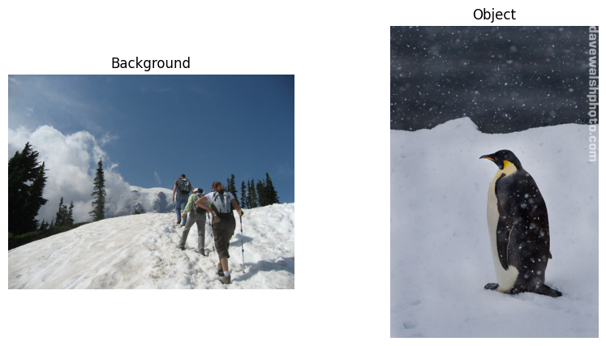 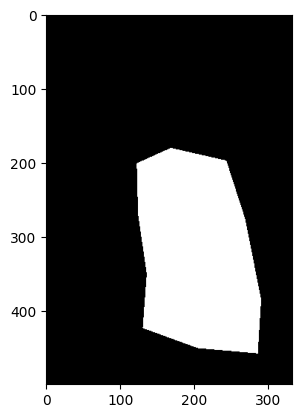 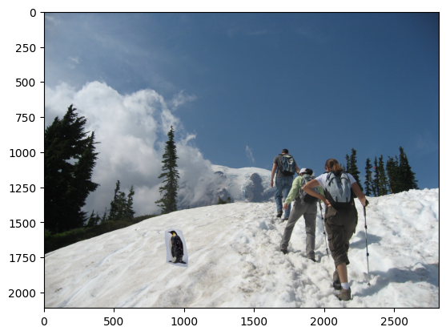 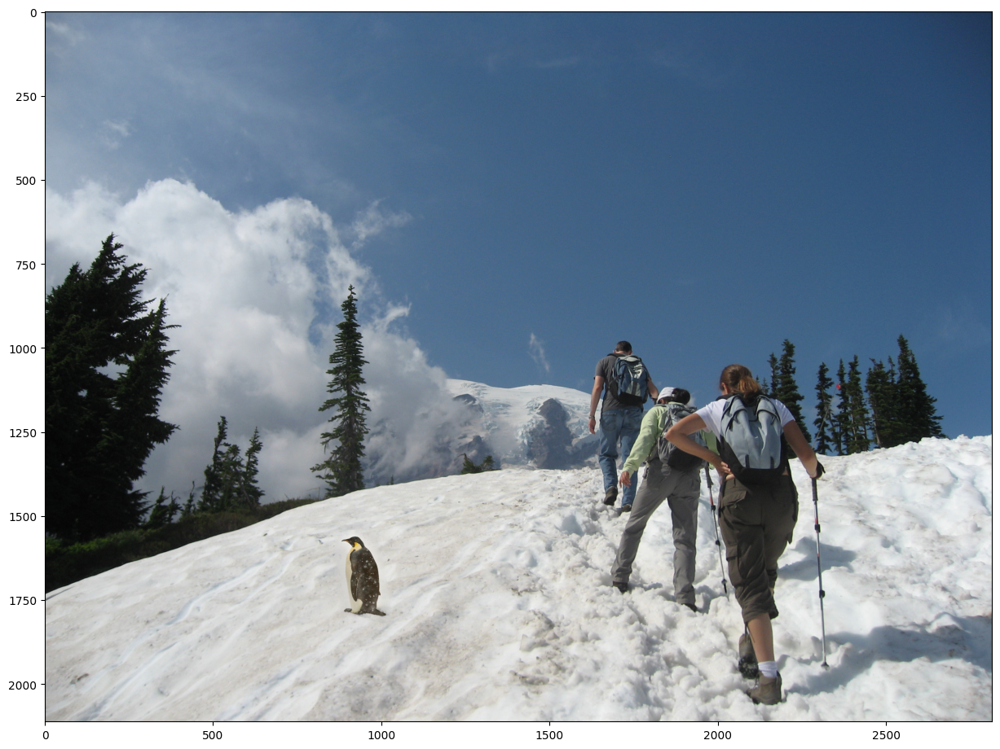 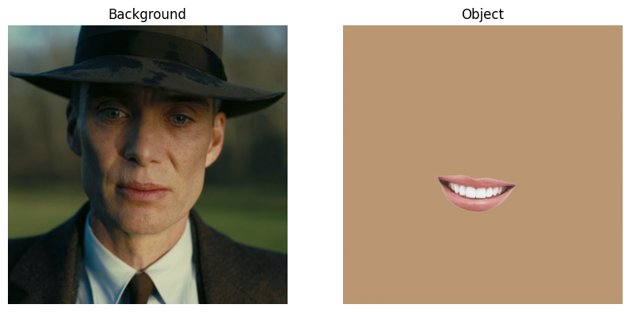 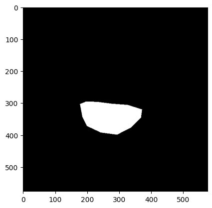 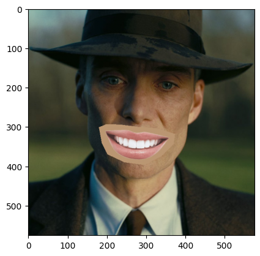 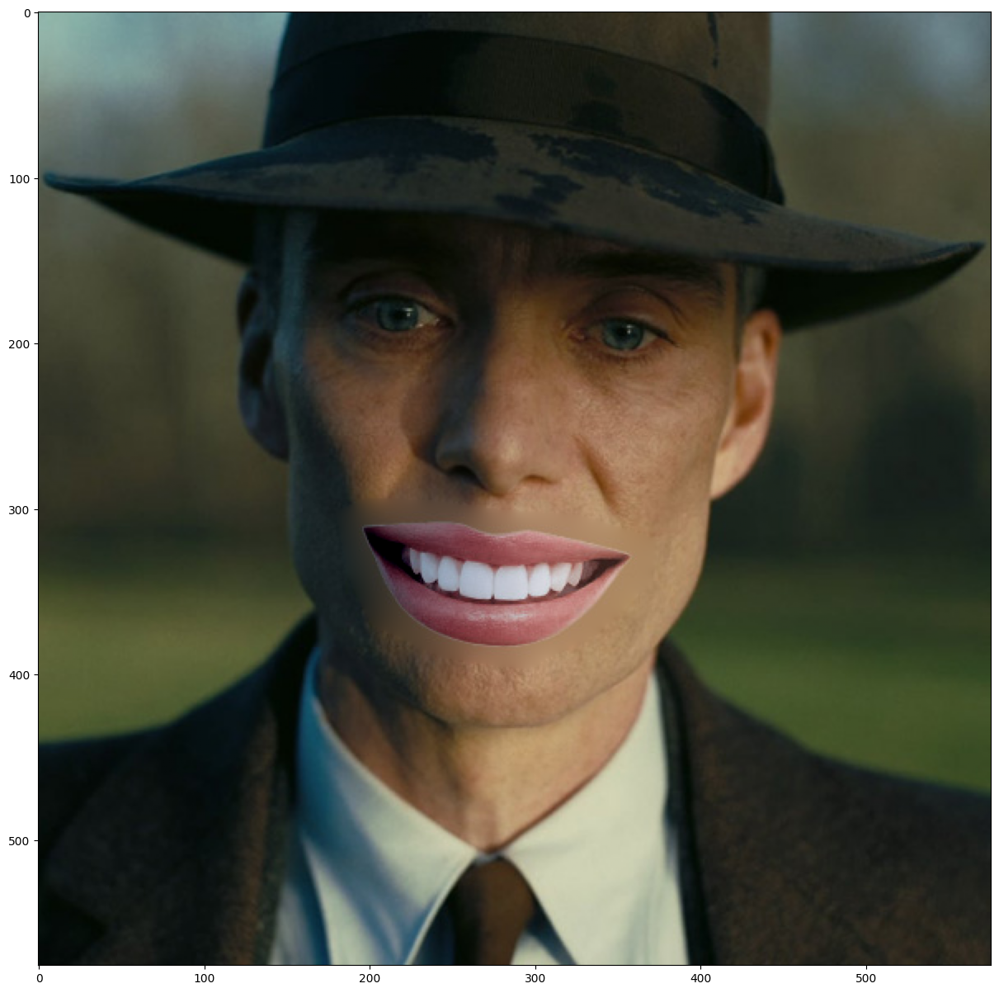 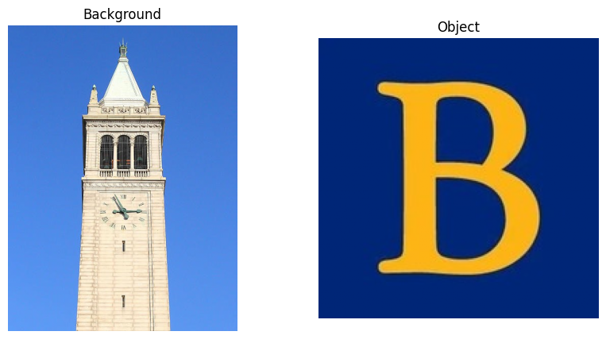 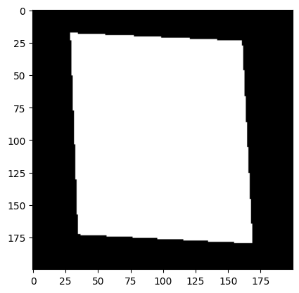 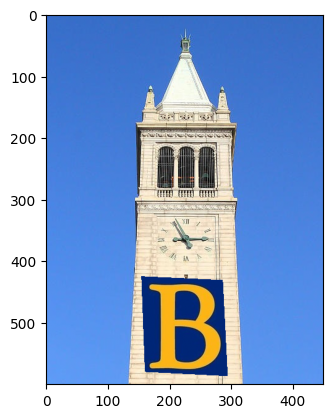For example 1 and 2, the results are pretty good and the blendings are seamless. However, for example 3 and 4, we can see that there are observable blurry boundries around the objects so the objects aren't well blended into the background. Probably it is because of the texture/color mismatch that makes this technique less effective.
Part 3: Mixed Gradients
Mixed gradients blending enhanced Poisson blending by letting me choose between the source or target gradient for each pixel, based on whichever had the larger magnitude. This helped preserve more details from the target image when appropriate.
Objective Function:
\[ \text{minimize: } \sum_{i \in S, j \in N_i \cap S} ((v_i - v_j) - d_{ij})^2 + \sum_{i \in S, j \in N_i \cap \neg S} ((v_i - t_j) - d_{ij})^2 \]
where \( d_{ij} \) is the larger gradient:
\[ d_{ij} = \begin{cases} s_i - s_j & \text{if } |s_i - s_j| > |t_i - t_j| \\ t_i - t_j & \text{otherwise} \end{cases} \]
Implementation Concepts
I constructed the sparse matrix \( A \) similarly to Poisson blending. However, the values in \( b \) were determined by \( d_{ij} \) instead of just the source gradients.
- If neighbor \( j \) was also in \( S \), I set \( A_{i,i} = 1 \), \( A_{i,j} = -1 \), and added \( d_{ij} \) to \( b_i \).
- If neighbor \( j \) was outside \( S \), I set \( A_{i,i} = 1 \), and added \( t_j + d_{ij} \) to \( b_i \).
Example
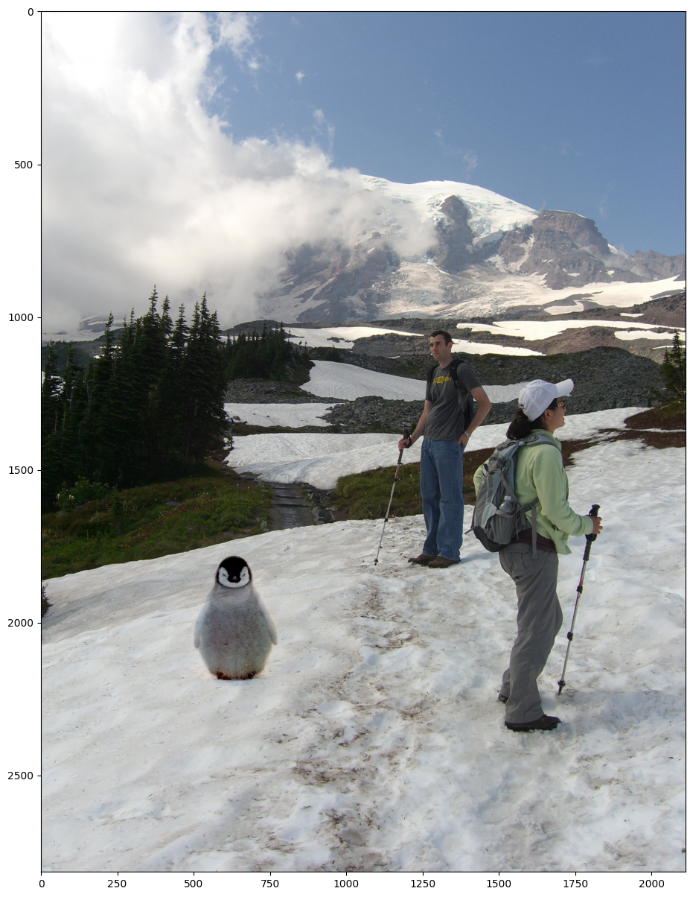 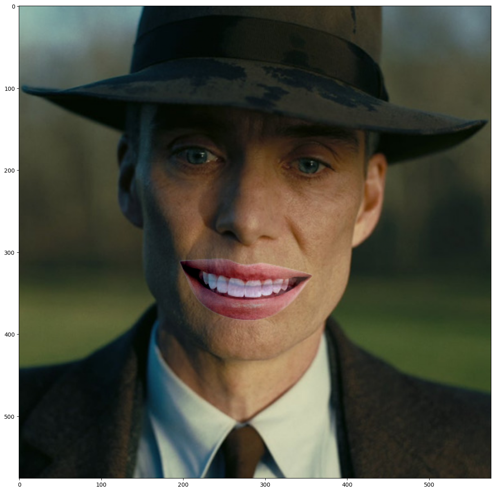 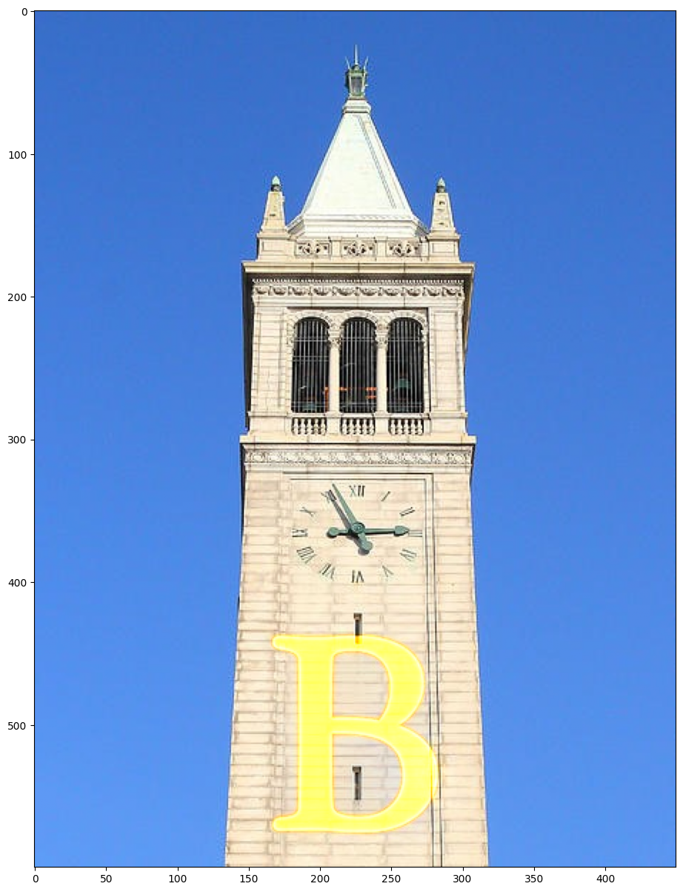All examples are well blended into the background without the blurry boundary from the poisson blending. However, the blended objects are being more transparent so we can see the background throught it (especially example 3 and 4).
Summary of Gradient Domain Fusion
Through this project, I learned how manipulating image gradients, rather than pixel values directly, can lead to powerful editing capabilities. Poisson and mixed-gradient blending demonstrated that seamless and realistic image composites are achievable by focusing on gradient matching. I would like to see how AI can be used to improve the blending techniques and make it more efficient and effective.